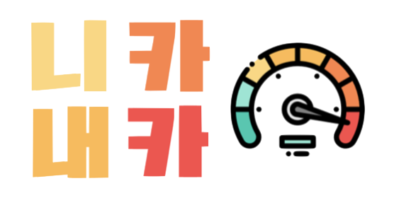

Jihye Oh
한화생명 드림하우스 하우어
트위그팜 인공지능 자연어처리 개발자
🌈 Who Is Jihye?
 한화생명 드림하우스 하우어
한화생명 드림하우스 하우어
Twigfarm Developer (NIA 인공지능 말뭉치 프로젝트)
 B.A. Yonsei University International Studies Business and Economics
B.A. Yonsei University International Studies Business and Economics
 Samsung SDS Multicampus Big Data Platform Using Open API
Samsung SDS Multicampus Big Data Platform Using Open API
Project Leader
 Starbucks Partner
Yoga Instructor
UX Designer
Developer - Front/Back End
Language - 🇰🇷🇺🇸🇯🇵🇨🇳
Based on Seoul, Seattle, New York
Starbucks Partner
Yoga Instructor
UX Designer
Developer - Front/Back End
Language - 🇰🇷🇺🇸🇯🇵🇨🇳
Based on Seoul, Seattle, New York
🏅 Awards 🏅
Starbucks Korea Best Partner 4th of 14,000 - 2019 July
Starbucks Korea Best Partner 14th of 14,000 - 2019 April
Hi, I'm Jihye Oh, and people call me Haley, my middle name. I've officially gotten permission from Graduate School of Communication at Yonsei University. Currently, i am studying to become front & back end developer who can handle big data. I studied East Asian International Studies(EIC). As having played the piano for 13 years before entering into College, I was good at working in arts by using Photoshop, Primeire Pro and Illustrator. In studying, I thought if I can use code and make sometihng through programming, I can show the more things of my creativity, and it would be my own special skills. I was so excited since it makes me find something that i want to learn and become. I decided to study computer programming. Passion in learning computer programming led me to take course of "Introduction to Software programming and Python" at school and apply to many events held by Samsung SDS and Electronics, such as IT mentoring and Bixby Conference. Thanks to my effort, before graduation, I was picked to take course of "Bigdata Platform using Open API" among hundred of applicants, which is based on Web and Bigdata Analysis held by Samsung SDS Multicampus. I have been learning Java, SQL, HTML, CSS, JavaScript, JSP, Spring MVC, D3, SVG, My Batis, Leaflet, Linux, Hadoop, Spark, Scala, Python, R. I have experiences of leading Web Projects (5 times). Most of my work is in charging of "Front-end, Back-end, DB using R". At the beginning of projects, we had difficulty in making all the layouts with our CSS skills, but kept trying to use the tags and figured out by using Bootstrap. By using this tool, thankfly, all of us are familiar with handling tools and primary layouts. After that, whenever in projects, I am not afraid of making logos with SVGs and creating contents. With some experience, my team applied to "K-startup" and "정주영창업경진대회" whose idea is based on using Web programming. Like this, I keep going on my goal and find out what kind of things I need to or can do. For 5 months, I have focused on learning programming and participating in Startup Competition. Not only for people becoming to run own business but also planning and studying was it great chance to challenge. The more I am studying, I feel lacks of my knowledges and the eager of learning leads me to apply to Graduate School of Design-Intelligence at Yonsie University. I am so excited and hope my passion is well received to the professors in the course of picking like document, interview.